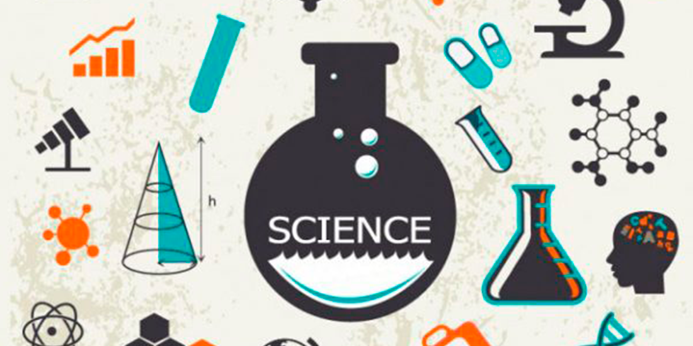

Știință
Știința este cheia pentru înțelegerea universului. De la fizică și chimie, până la biologie și astronomie, știința ne ajută să descoperim cum funcționează totul în jurul nostru.Știința (din cuvântul latin scientia, care înseamnă „cunoaștere”) este un sistem ordonat de cunoștințe structurate care studiază, cercetează și interpretează fenomenele naturale, sociale și artificiale. Cele mai vechi rădăcini ale științei pot fi urmărite în Egiptul Antic și Mesopotamia în jurul anilor 3500-3000 î.Hr.Contribuțiile lor la matematică, astronomie și medicină au modelat filosofia naturală greacă a antichității clasice, prin care s-au făcut încercări formale de a oferi explicații ale evenimentelor din lumea fizică bazate pe cauze naturale.[
 Înapoi la pagina principală